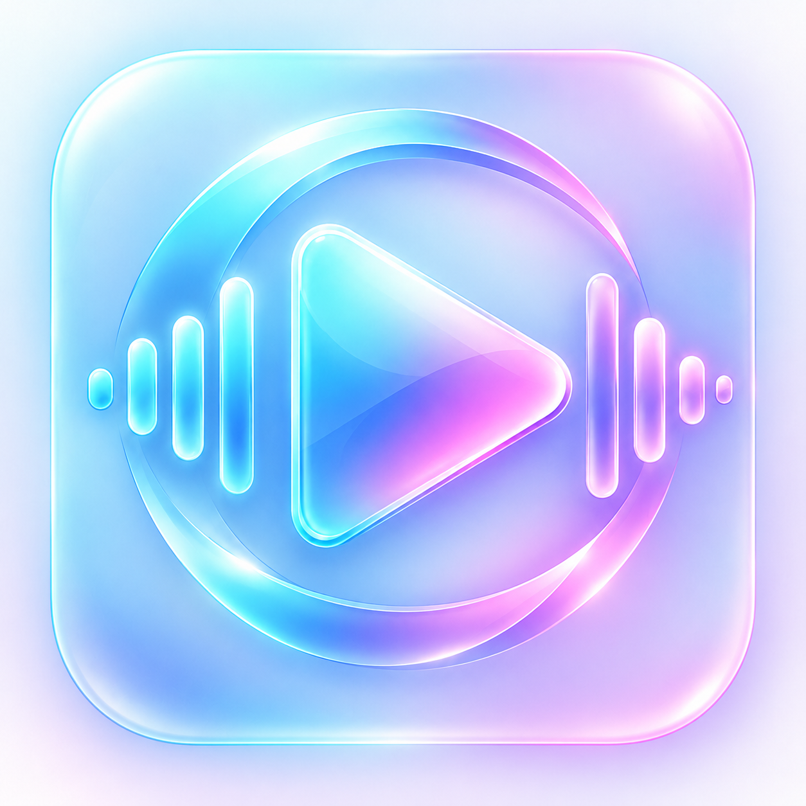

搜索
⌕
下一部好片，从这里开始
输入关键词，搜索结果会按平台分别展示。
收藏
设置
外观
主题
选择你喜欢的观看氛围
平台账号
播放前需登录对应平台。会员权益与购买权限由官网决定。
关于简视频
简视频 1.0.21
HTML · CSS · JS正在读取运行环境
检查更新
当前版本 1.0.21
手动检查 GitHub 最新正式版本
影片信息来自官网公开页面。网站发生变化时，部分内容可能暂时无法读取。

简视频输入关键词，搜索结果会按平台分别展示。
选择你喜欢的观看氛围
播放前需登录对应平台。会员权益与购买权限由官网决定。
正在读取运行环境
当前版本 1.0.21
手动检查 GitHub 最新正式版本
影片信息来自官网公开页面。网站发生变化时，部分内容可能暂时无法读取。
请在下方官网完成登录或验证，然后点击“完成登录，继续”。
正在识别官网播放器…